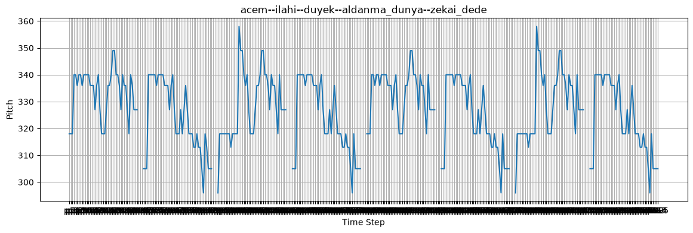
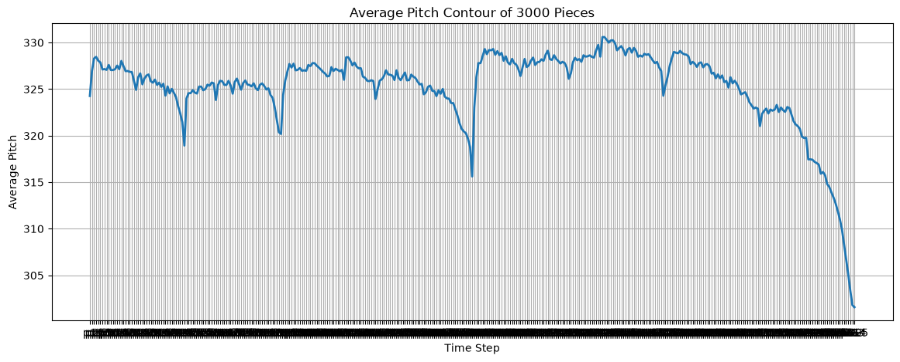
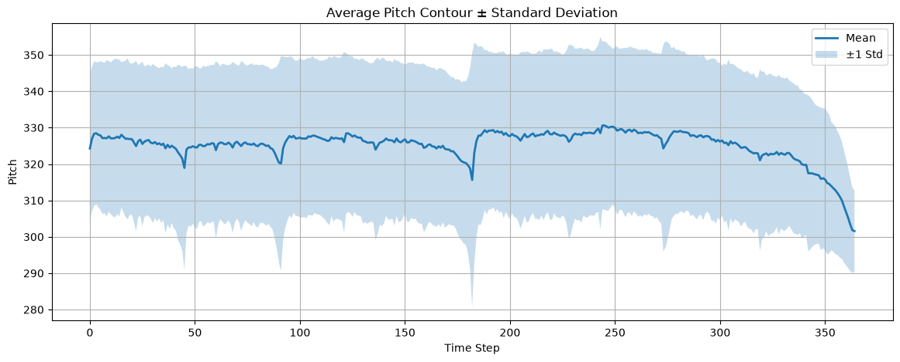
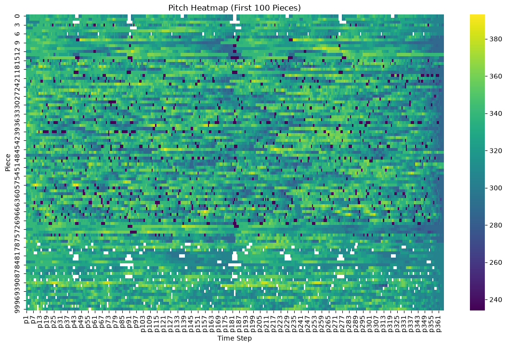
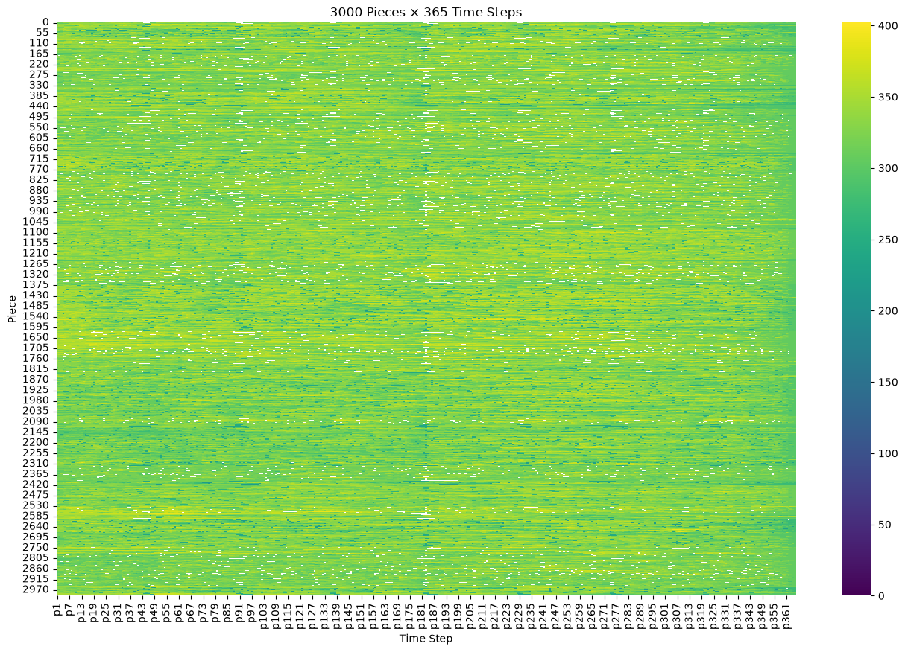

import pandas as pd
from pathlib import Path
DATA_RAW = Path("../data/raw").resolve()
csv_file = DATA_RAW / "Turkish maqam music pieces in time series format_3000 rows x 365 columns.csv"
df = pd.read_csv(csv_file)
X = df.iloc[:,1:]
import matplotlib.pyplot as plt
sample = X.iloc[0]
plt.figure(figsize=(14,4))
plt.plot(sample)
plt.title(df.iloc[0]["ID"])
plt.xlabel("Time Step")
plt.ylabel("Pitch")
plt.grid(True)
plt.show()

import matplotlib.pyplot as plt
mean_curve = X.mean(axis=0)
plt.figure(figsize=(14,5))
plt.plot(mean_curve, linewidth=2)
plt.title("Average Pitch Contour of 3000 Pieces")
plt.xlabel("Time Step")
plt.ylabel("Average Pitch")
plt.grid(True)
plt.show()

import numpy as np
import matplotlib.pyplot as plt
mean_curve = X.mean(axis=0)
std_curve = X.std(axis=0)
t = np.arange(len(mean_curve))
plt.figure(figsize=(14,5))
plt.plot(t, mean_curve, linewidth=2, label="Mean")
plt.fill_between(
t,
mean_curve - std_curve,
mean_curve + std_curve,
alpha=0.25,
label="±1 Std"
)
plt.title("Average Pitch Contour ± Standard Deviation")
plt.xlabel("Time Step")
plt.ylabel("Pitch")
plt.legend()
plt.grid(True)
plt.show()

import seaborn as sns
import matplotlib.pyplot as plt
subset = X.iloc[:100]
plt.figure(figsize=(14,8))
sns.heatmap(
subset,
cmap="viridis",
cbar=True
)
plt.title("Pitch Heatmap (First 100 Pieces)")
plt.xlabel("Time Step")
plt.ylabel("Piece")
plt.show()

import seaborn as sns
plt.figure(figsize=(16,10))
sns.heatmap(
X,
cmap="viridis",
cbar=True
)
plt.title("3000 Pieces × 365 Time Steps")
plt.xlabel("Time Step")
plt.ylabel("Piece")
plt.show()
